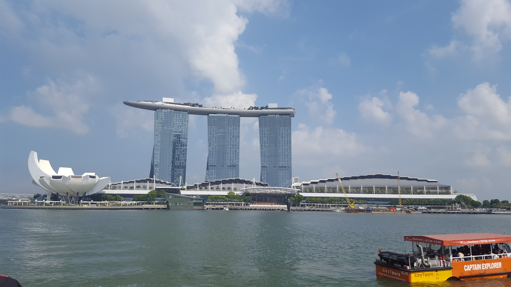

In my summer holiday, I visited Singapore after Hongkong.
Chinatown complex
This is a food paradise. The wide variety of food selections will surprise anyone`s eyes.
Marina Bay Sands
Marina Bay Sands is one of two winning proposals for Singapore's first integrated resorts, the other being the Resorts World Sentosa, which incorporates a family-friendly Universal Studios Theme Park (Universal Studios Singapore)
Gardens by the Bay
Gardens by the Bay is a nature park spanning 101 hectares (250 acres) of reclaimed land in the Central Region of Singapore, adjacent to the Marina Reservoir.Botanical garden
Gardens by the Bay is a nature park spanning 101 hectares (250 acres) of reclaimed land in the Central Region of Singapore, adjacent to the Marina Reservoir.